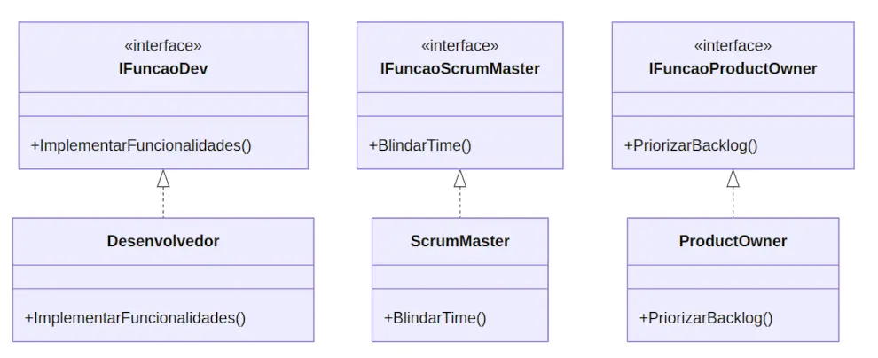

Foca
Foca Princípios SOLID - Entenda o "I" do SOLID (criado em 03/09/2025)
Continuando nossa série sobre os princípios SOLID, vamos para o I: o Princípio da Segregação de Interfaces.
Se você já viu uma classe que precisa implementar métodos que ela nunca utiliza, é ai que o princípio se encaixa.
A ideia por trás do 'I' é simples e direta, mas fundamental para um bom design de software.
I - Interface Segregation Principle (Princípio da Segregação de Interface)
Este princípio afirma que:
"Uma cliente não deve ser forçada a depender de interfaces que ela não usa."
(pt.wikipedia.org, en.wikipedia.org)
Ou seja:
- Interfaces grandes e genéricas devem ser divididas em interfaces menores e mais específicas. Interfaces menores são mais fáceis de usar e garantem que as classes que as implementam só se preocupem com o que realmente importa para elas.
🚫 Exemplo errado (violando ISP)
Vamos imaginar um time de desenvolvimento ágil com diferentes papéis: Desenvolvedor, ScrumMaster e ProductOwner. Para padronizar as responsabilidades, criamos uma única e "inchada" interface chamada IFuncaoTime.
// A "Interface Gorda" que viola o I do SOLID
public interface IFuncaoTime {
void ImplementarFuncionalidades();
void BlindarTime();
void PriorizarBacklog();
}
// O Dev é forçado a implementar métodos que não usa
public class Desenvolvedor implements IFuncaoTime {
public void ImplementarFuncionalidades() {
// O dev implementa o que é da sua responsabilidade
System.out.println("O dev está implementando funcionalidades.");
}
public void BlindarTime() {
// 🤔 O que fazemos aqui? O dev não blinda o time.
// Somos forçados a implementar um método vazio ou que lança um erro.
}
public void PriorizarBacklog() {
// 🤔 E aqui? O dev não prioriza o backlog.
}
}
const dev = new Desenvolvedor();
dev.ImplementarFuncionalidades(); // Funciona
dev.BlindarTime(); // Chamada de um método sem lógica. Isso é um erro de design!
Viu o problema? A interface IFuncaoTime força a classe Desenvolvedor a depender de métodos que ela não precisa. Isso torna o código mais frágil e mais difícil de manter.
✅ Exemplo correto (respeitando ISP)
A solução: segregar! Vamos dividir a interface "inchada" em várias interfaces menores e mais coesas. Cada interface representará um papel ou uma capacidade específica, conforme o seu exemplo.
// Interfaces segregadas e focadas
public interface IFuncaoDev {
void ImplementarFuncionalidades();
}
public interface IFuncaoScrumMaster {
void BlindarTime();
}
public interface IFuncaoProductOwner {
void PriorizarBacklog();
}
// Agora, as classes implementam apenas as interfaces que precisam
public class Desenvolvedor implements IFuncaoDev {
public void ImplementarFuncionalidades() {
System.out.println("O dev está implementando funcionalidades.");
}
}
public class ScrumMaster implements IFuncaoScrumMaster {
public void BlindarTime() {
System.out.println("O scrum master está blindando o time.");
}
}
public class ProductOwner implements IFuncaoProductOwner {
public void PriorizarBacklog() {
System.out.println("O product owner está priorizando o backlog.");
}
}
const dev = new Desenvolvedor();
dev.ImplementarFuncionalidades(); // Funciona
// dev.BlindarTime(); // Isso geraria um erro de compilação ou de tipo, o que é bom!
Com essa abordagem, as classes ficam mais especializadas e menos acopladas a código desnecessário. O Desenvolvedor só se preocupa com o que é de sua responsabilidade. A responsabilidade de cada classe fica clara, e o código se torna mais robusto e fácil de manter.
Pense nisso como um controle remoto universal. No começo, pode parecer útil, mas o excesso de botões que você nunca usará só torna a experiência pior. Já um controle remoto simples, com apenas os botões da TV, é muito mais prático. É a mesma lógica!
Então, lembre-se: interfaces pequenas e focadas são a chave para um código mais limpo e modular.
